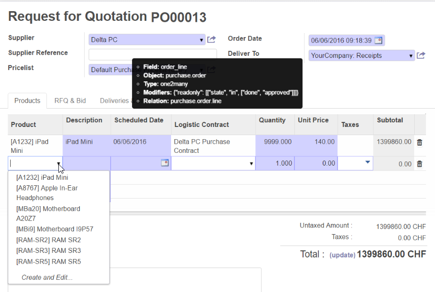

<section class="oe_container">
    <div class="oe_row oe_spaced">
        <div class="oe_span12">
            <h2 class="oe_slogan">Purhcase Filter Products by Supplier</h2>
            <h3 class="oe_slogan">Filter products by given supplier</h3>
        </div>
    </div>
</section>

<section class="oe_container oe_dark">
    <div class="oe_row oe_spaced">
        <h2 class="oe_slogan">Filter on Purchase Order</h2>
        <div class="oe_span6">
            <p class="oe_mt32">
                Only products are selectable where the given partner is set as main or alternative supplier.
            </p>
        </div>
        <div class="oe_span6">
            <div class="oe_row_img oe_centered">
                
            </div>
        </div>
    </div>
</section>

<section class="oe_container oe_dark">
    <div class="oe_row oe_spaced">
        <div class="oe_span12 oe_centered oe_muted">
            More informations about Odoo Services of <a style="color:#6d57e0" href="https://jamotion.ch/" target="_blank">Jamotion GmbH here...</a>
        </div>
    </div>
</section>
